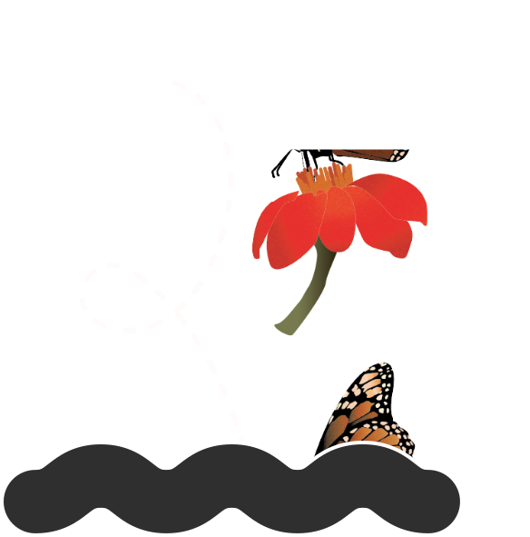

Pollinators & Native Plants
To understand why native plants can be so much more beneficial to the ecosystem than foreign ones, look to monarchs.
Orange and black butterflies that stop to rest in White’s yard are endangered, the number in existence precipitously declining every year. While climate change and habitat loss drive their decline, so too does the loss of milkweed, which has been lost to habitat destruction and widespread use of pesticides. Milkweed is the sole source of food for monarch caterpillars and a snack for adult butterflies fueling up for migrations spanning North America. In the past century, both milkweed and monarch populations have declined, hand-in-hand, studies show. The U.S. Geological Survey estimates that over 800 million milkweed stems disappeared from North America in the past decade, and as many as two billion new stems are needed to help monarch populations rebound.
Monarchs aren’t the only bug fighting for existence. Insects around the world are vanishing at such an alarming rate, a disturbing swing scientists have dubbed an insect “apocalypse.”
Restoring native habitat could help prevent that loss. One study estimated that if 10 percent of the lawn in every home, school, and park was converted to native plants, insects would have access to four million acres of livable habitat.
